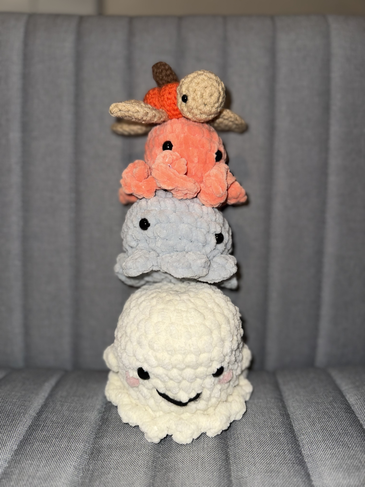
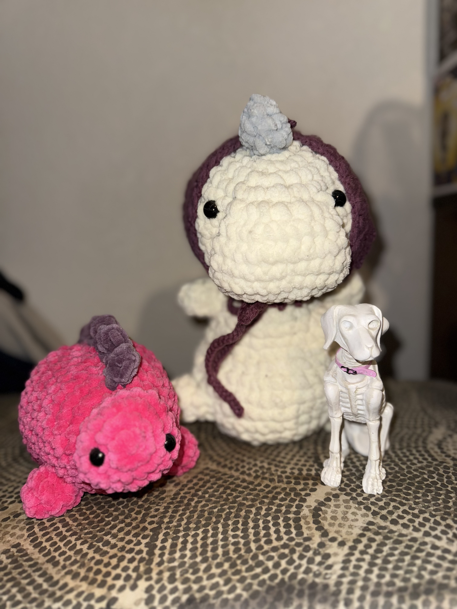

Welcome to the Crochet Section!
Here in the crochet section, we have a few crochet products for you to view.

From top to bottom we have the Pumpkin shell turtle, the Orange Octopus, The Blue Octopus, and The Smiling Ghost. Part of GB_CrochetCreations
| Crochet Item |
Price |
Origin |
| Realm Travelers |
Priceless |
Blood, Sweat, & Tears |

The Pink StegoSaursus, and the Granny Rex are part of the Dino Collection by GB_CrochetCreations
| Crochet Item |
Price |
Origin |
| Dinos Dog |
Priceless |
Te Gol Ol Noggin |